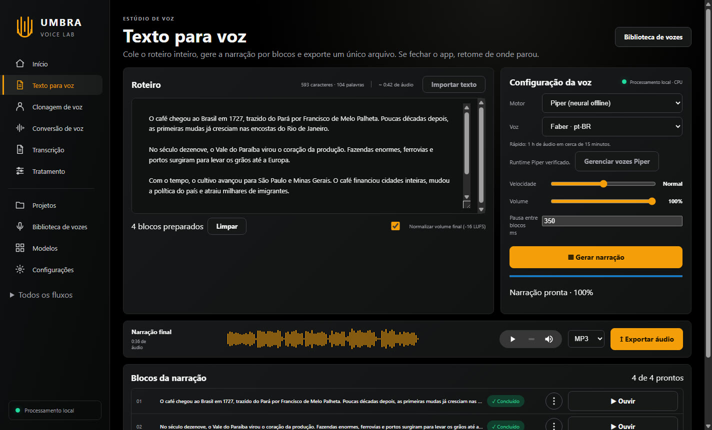
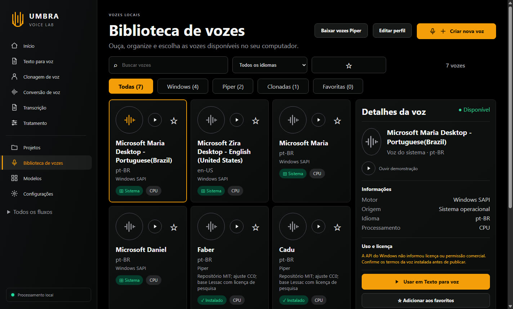
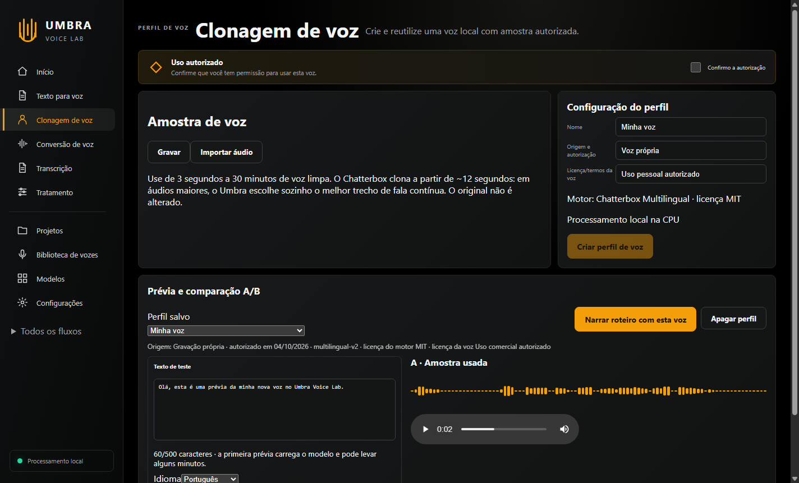
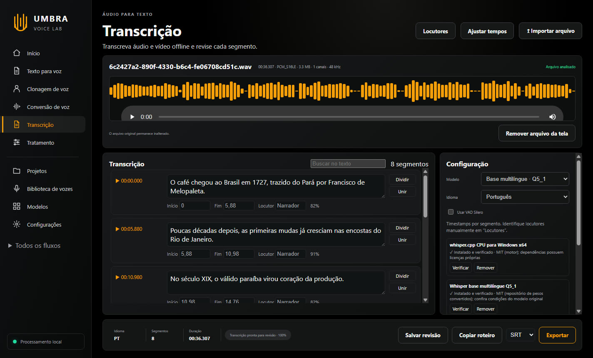
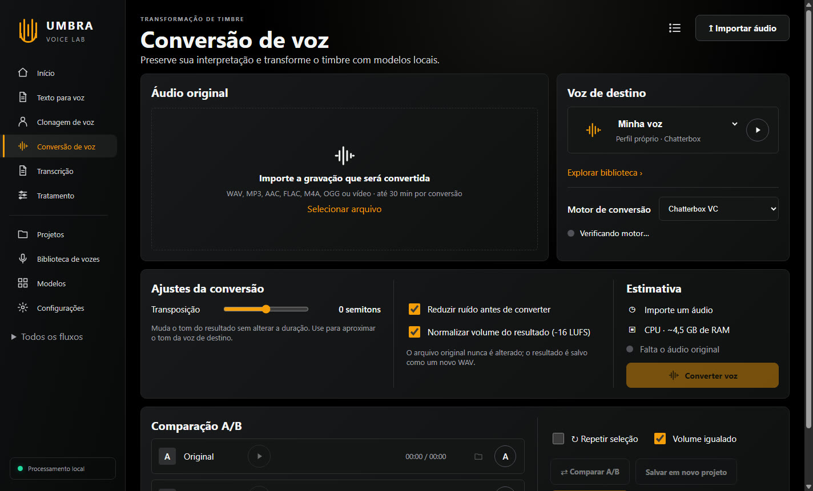
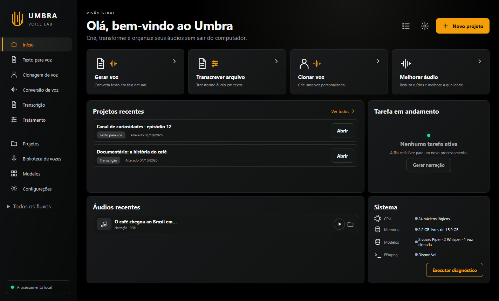
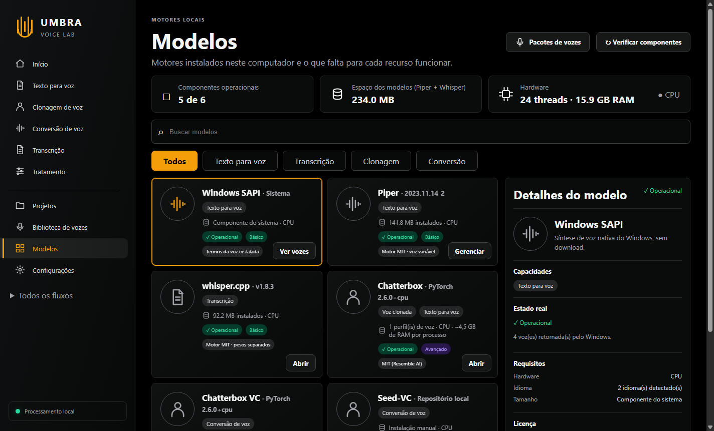

Estúdio de voz para Windows
Narrações de uma hora, geradas no seu computador.
Cole o roteiro inteiro do vídeo, escolha uma voz e exporte um único MP3. Sem cobrança por caractere, sem enviar seus textos para a internet. Se fechar o programa no meio, ele continua de onde parou.
Para Windows 10 e 11 (64 bits). Funciona na CPU: não precisa de placa de vídeo.

Para quem é
Feito para quem publica voz toda semana.
Texto para voz
Cole o roteiro. O Umbra cuida do resto.
O texto é dividido em blocos, gerado em sequência e juntado num único arquivo. Você acompanha cada bloco pronto e o tempo que falta.
- Roteiros de até 1 milhão de caracteres, sem cobrança por uso
- Retoma de onde parou se o PC reiniciar ou se você fechar o app
- Velocidade, volume e pausa entre blocos ajustáveis
- Exporta MP3, WAV ou FLAC

Clonagem de voz
Sua voz, narrando roteiros que você nunca gravou.
Importe ou grave alguns minutos de fala limpa. O Umbra escolhe sozinho o melhor trecho da amostra e cria um perfil reutilizável com o motor Chatterbox.
- Amostras de 3 segundos a 30 minutos
- Narra em português, inglês, espanhol e mais 20 idiomas
- Estilos padrão, calmo e expressivo
- Gravador com medidor de nível e editor de tomadas
Use apenas vozes que você tem autorização para clonar

Transcrição
Do áudio para a legenda em minutos.
Transcreva vídeos e áudios com o Whisper, revise cada trecho com o player ao lado e exporte as legendas.
- Exporta SRT, VTT, TXT e JSON
- Nome do locutor em cada fala
- Ajuste global de tempos para sincronizar com o vídeo
- Copie o roteiro completo com um clique

Conversão e tratamento
Troque o timbre e deixe o som limpo.
Converta uma gravação para outra voz mantendo a sua interpretação, compare antes e depois e trate o áudio com uma cadeia de filtros.
- Conversão de voz com seleção de trecho e transposição de tom
- Redução de ruído, de-esser, compressor e limitador
- Presets prontos: podcast, voz do celular, narração para vídeo
- Separa a voz da música de fundo (Demucs)

Como funciona
Três passos até o arquivo final.
Cole ou importe o roteiro
Texto puro ou arquivo .txt. Separe os parágrafos com uma linha em branco para ganhar pausas naturais.
Escolha a voz
Uma voz do Windows, uma das vozes Piper ou o seu perfil de voz clonada. Ouça uma amostra antes de gerar.
Gere e exporte
Acompanhe o progresso bloco a bloco. No fim, exporte um MP3 normalizado e coloque no seu editor de vídeo.
Desempenho real
Quanto tempo leva, sem promessa exagerada.
Medições feitas num PC com processador Intel Xeon E5-2650 v4, 16 GB de RAM e sem placa de vídeo dedicada para IA. Em processadores mais novos, tende a ser mais rápido.
| Tarefa | Tempo medido | Observação |
|---|---|---|
| Narração com voz Piper | ~9 min por hora de áudio | Roteiro de 9.084 palavras virou 59,8 minutos de narração. |
| Narração com voz do Windows | poucos minutos | Usa as vozes já instaladas no sistema. |
| Narração com voz clonada | ~5 a 6 h por hora de áudio | É o recurso mais pesado. Deixe gerando e volte depois; o Windows não entra em suspensão enquanto houver trabalho.Com 2 processos em paralelo, que precisam de cerca de 9 GB de RAM livre. |
| Conversão de voz | ~3 min para 45 s de áudio | Inclui o carregamento do modelo, que acontece uma vez por conversão. |
Os tempos variam conforme o processador, a memória disponível e os outros programas abertos.
Por dentro do app
Tudo em um só lugar.


Requisitos e licenças
Antes de comprar.
Requisitos do computador
- Sistema
- Windows 10 ou 11, 64 bits
- Memória
- 8 GB para vozes do Windows, Piper e transcrição. 16 GB recomendados para voz clonada.
- Processador
- Qualquer CPU 64 bits moderna. Mais núcleos deixam a voz clonada mais rápida.
- Placa de vídeo
- Não é necessária
- Internet
- Só para baixar os modelos de voz na primeira vez
Uso comercial das vozes
Você pode publicar e monetizar os áudios que criar, mas a licença depende da voz usada:
Sua própria voz clonada é o caminho mais seguro para vender narrações.
9 vozes Piper em inglês (Bryce, Kristin, Norman, LJSpeech, Cori, LibriTTS) foram treinadas com dados de domínio público ou CC BY.
As vozes Piper em português foram derivadas de uma base com licença de pesquisa; o app mostra o aviso em cada uma.
Dentro do Umbra, cada voz mostra a sua licença antes de você usar.
Preço
Tudo o que vem no Umbra.
- Texto para voz com vozes do Windows, Piper e voz clonada
- Narrações longas, sem limite de caracteres
- Clonagem e conversão de voz
- Transcrição com legendas SRT e VTT
- Tratamento de áudio e separação de voz e música
- Projetos, biblioteca de vozes e fila de trabalhos
Preço
Fale comigo no WhatsApp para saber o preço e as condições de pagamento.
Falar sobre o preço no WhatsAppPerguntas frequentes
Dúvidas comuns.
Quanto custa?
O preço é passado direto pelo WhatsApp: fale comigo aqui.
Precisa de internet para usar?
Só para baixar os modelos de voz na primeira vez. Depois disso, gerar narrações, clonar, transcrever e tratar áudio funciona offline.
Meus roteiros e gravações vão para algum servidor?
Não. Todo o processamento acontece no seu computador. Textos, amostras de voz e áudios ficam nas suas pastas.
Preciso de placa de vídeo?
Não. O Umbra foi feito para rodar na CPU. Uma placa de vídeo não é usada pelo app.
Quanto tempo leva para narrar um vídeo de 1 hora?
Com as vozes Piper, cerca de 10 minutos no nosso PC de teste. Com a voz clonada, algumas horas: dá para deixar gerando enquanto faz outra coisa, e o app retoma de onde parou se for fechado.
Funciona em Mac ou Linux?
Não. O Umbra Voice Lab é feito para Windows 10 e 11 de 64 bits.
Posso clonar a voz de outra pessoa?
Apenas com autorização dela. O app pede a confirmação de consentimento e registra a origem da amostra em cada perfil de voz.
Em quais formatos posso exportar?
Narrações e áudios tratados em MP3, WAV e FLAC. Transcrições em SRT, VTT, TXT e JSON.